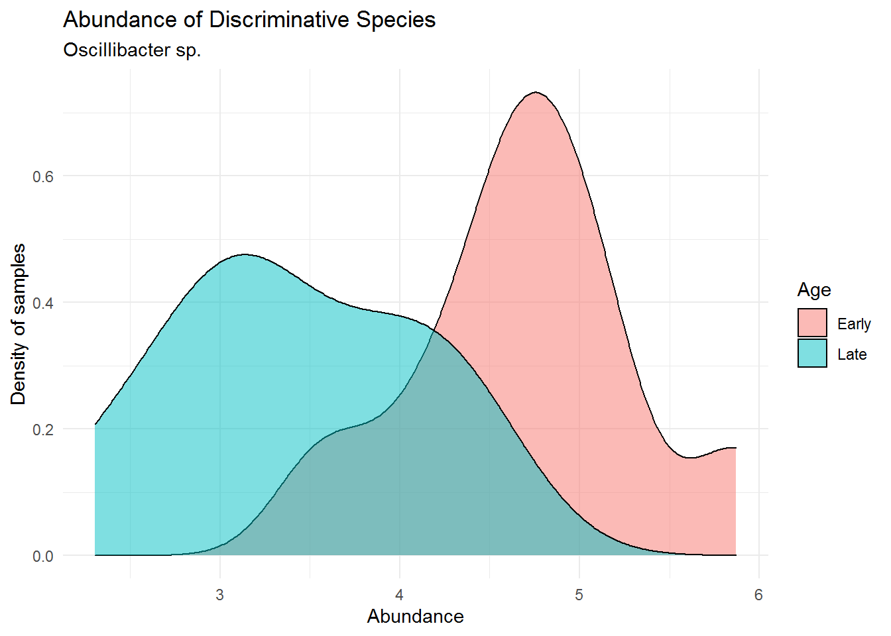

Chapter 8 Classification using Microbiome
The main microbiome analysis was already done in the previous chapter. But the result of previous chapter can be used further for additional analysis. In this capter we will demonstrate examples for doing supervised learning (a classification task) using microbiome data.
The classification task enhanced by microbiome data relies on the sample we have, which was obtained based on a research question. Our research question provide a design where we can obtain sample from early or old aged mouse. After microbiome analysis, we knew that microbiome composition change with age. Therefore, we can try classify whether a mouse is early or old aged based on the its gut microbioal composition.
The package caret provides various functions for machine learning algorithm. We’ll try using the robust Random Forest algorithm on this one. For that we also need a randomForest package. Make sure that you have each of them installed and loaded into your session.
We’ll be using microbial count or otu_table from ps_cut data which represent the microbial composition of our sample. This data is also already removed for its outlier. We’ll also log-transform our data before analysis.
## Loading required package: phyloseq## OTU Table: [3 taxa and 3 samples]
## taxa are columns
## ASV5 ASV8 ASV11
## F3D0 173 185 111
## F3D1 140 191 284
## F3D141 190 324 225## OTU Table: [3 taxa and 3 samples]
## taxa are columns
## ASV5 ASV8 ASV11
## F3D0 5.159055 5.225747 4.718499
## F3D1 4.948760 5.257495 5.652489
## F3D141 5.252273 5.783825 5.420535The first step of classification (or any machine learning task) is to divide our data into train and test set. to ensure that the test set realistically simulates the collection of new data, we will be using random sampling to split the data.
# get age label & microbiome data
data_ml <- data.frame(age = sample_data(ps_cut_log)$When, otu_table(ps_cut_log))
# get index for sampling
idx_train <- sample(nrow(sample_data(ps_cut_log)), size = nrow(sample_data(ps_cut_log))*0.8)
# splitting train-test
training <- data_ml[idx_train,]
testing <- data_ml[-idx_train,]Once we split the data, we can use the train function to fit the Random Forest model.
##
## rfClasses Early Late
## Early 2 0
## Late 0 2Next we can predict mouse age labels on the test set using predict() function.
Then we can do a quick model evaluation by using simple confusion matrix.
## actual
## pred Early Late
## Early 2 0
## Late 0 2We’ll there is accuracy 100%, but please note that the number of data we have for this demonstration is still very low. It might be better to train and test the model with a larger sample size, for example 30-300 sample or more.
To better understand the fitted random forest model, we can identify which microbe have the highest influence in the random forest prediction. We can use the function importance() from randomForest package and to find out each variable or in our case microbial species importance:
## MeanDecreaseGini
## ASV5 0.125397702
## ASV8 0.219382928
## ASV11 0.163005528
## ASV15 0.271417316
## ASV16 0.333647808
## ASV27 0.405051571
## ASV30 0.239835786
## ASV34 0.000000000
## ASV41 0.148721834
## ASV44 0.014960373
## ASV45 0.141743723
## ASV46 0.165285570
## ASV47 0.000000000
## ASV48 0.147208791
## ASV52 0.255870751
## ASV53 0.000000000
## ASV58 0.242872006
## ASV60 0.000000000
## ASV65 0.086742524
## ASV66 0.280912821
## ASV68 0.301280131
## ASV71 0.117645455
## ASV74 0.306883006
## ASV81 0.175225974
## ASV86 0.069356466
## ASV89 0.106354057
## ASV92 0.000000000
## ASV94 0.131035786
## ASV99 0.268397036
## ASV101 0.000000000
## ASV102 0.087275169
## ASV111 0.016042025
## ASV120 0.000000000
## ASV121 0.163664924
## ASV132 0.221767621
## ASV141 0.240852081
## ASV143 0.103141114
## ASV145 0.000000000
## ASV146 0.058373826
## ASV164 0.098591275
## ASV172 0.070926607
## ASV177 0.068640637
## ASV190 0.024858841
## ASV191 0.008968032
## ASV203 0.063437085
## ASV208 0.026504762
## ASV217 0.010176623
## ASV224 0.023548452
## ASV233 0.029568909The function above shown all the variable importance, but we only need one microbe with the highest importance. In this case “ASV27”. Let’s use some function to simply take out that microbe and find out its taxonomy so we can analyze it further.
## Taxonomy Table: [1 taxa by 7 taxonomic ranks]:
## Kingdom Phylum Class Order Family
## ASV27 "Bacteria" "Firmicutes" "Clostridia" "Oscillospirales" "Oscillospiraceae"
## Genus Species
## ASV27 "Oscillibacter" NAThis turns out to be a microbe from Orer Oscillospirales, Family Oscillospiraceae, and genus Oscillibacter. Let’s try plots its abundance across samples.
# get microbial abundance
imp_abd <- as.vector(otu_table(ps_cut_log)[,"ASV27"])
# combine with sample data
imp_df <- data.frame(sample_data(ps_cut_log),
abund = imp_abd)
# plotting
imp_plot<- ggplot(imp_df, aes(x = abund)) +
geom_density(aes(fill = When),
alpha = 0.5) +
labs(title = "Abundance of Discriminative Species",
subtitle = "Oscillibacter sp.",
x = "Abundance",
y = "Density of samples",
fill = "Age") +
# below is for aesthetics
theme_minimal()
We can see that Oscillibacter sp. has lower abundance in the mouse early age (0-9 days) and much higher in its late age (141-150). Based on this research, Oscillibacter sp. may become a biomarker for mouse age for classification task.